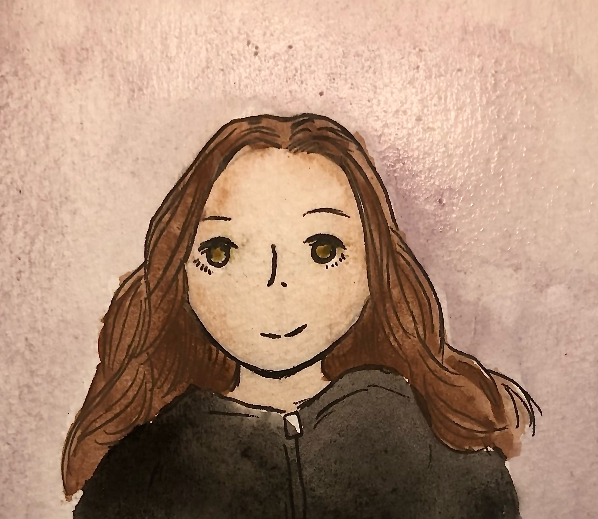
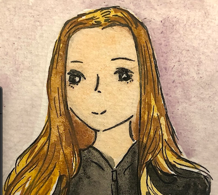
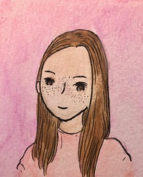
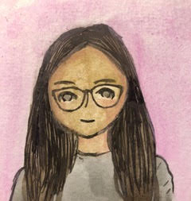

| Vivian | Maureen | Lucy |
|---|---|---|
|  |  |
 |
| Hi! I’m Vivian! I am the VP of Marketing! I spend my time outside of school playing soccer and hanging out with my friends. When I’m not playing with my dog, I like to hang out with my family. I love working with Tassa, and I hope you’ll join our group! | Hi! I’m Maureen! I am the VP of Operations! I spend my time outside of school doing yoga and cooking! When I'm not writing, I like to go on hikes with my friends! I hope my team gets your support so we can continue to make creative jewelry using tassels! | Hi! I’m Lucy! I am the VP of Information! I spend my time outside of school playing with my dog and reading! When I'm not listening to music, I can be found hanging out with my friends. I’m super excited to be a part of Tassa’s amazing team! |
|  |  | Hi! I'm Fiona! I am the VP of Finance! I make sure that we stay under budget and buy the best products. I spend my time out of school, dancing, skiing, playing with my dog, and hanging out with friends | Hi! I'm Gabi! I am the VP of Communications! My job is to help us communicate between teachers and teammates. I spend my time out of school listening to music, making art, and spending time with friends. |
Thank you so much Alexa in 7th grade for drawing our avatars!